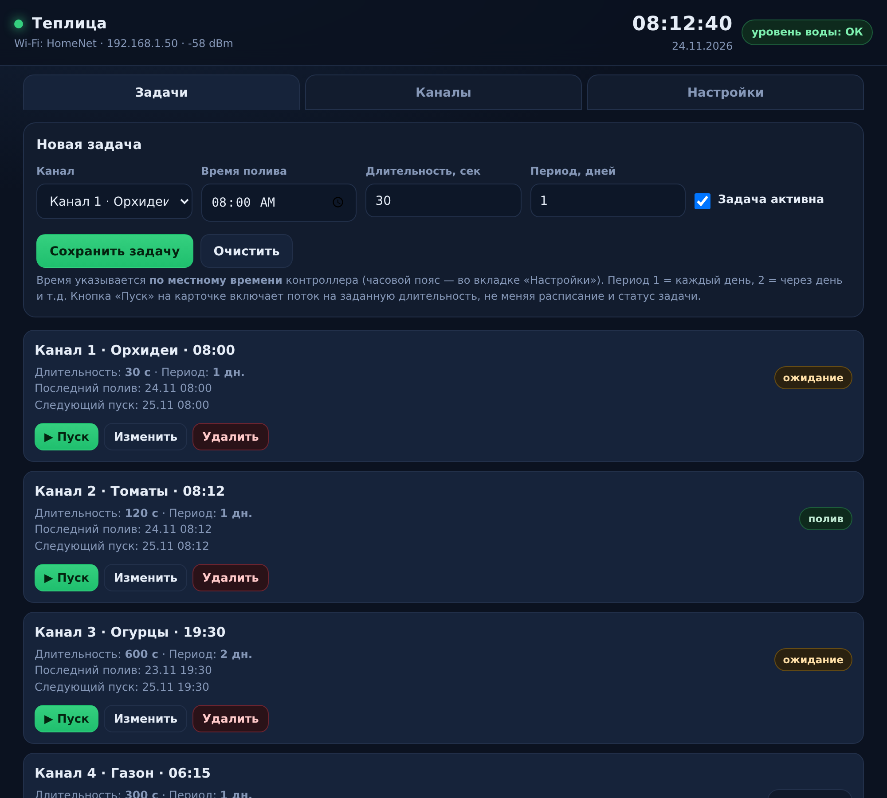
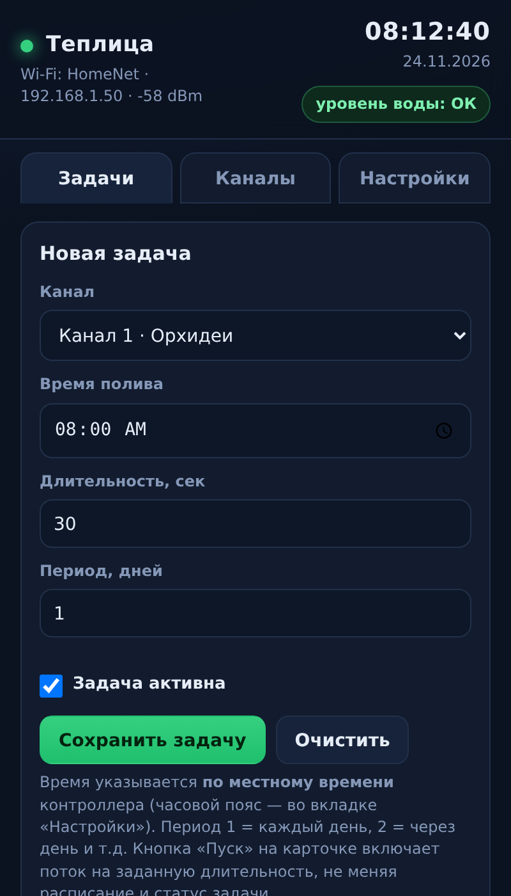
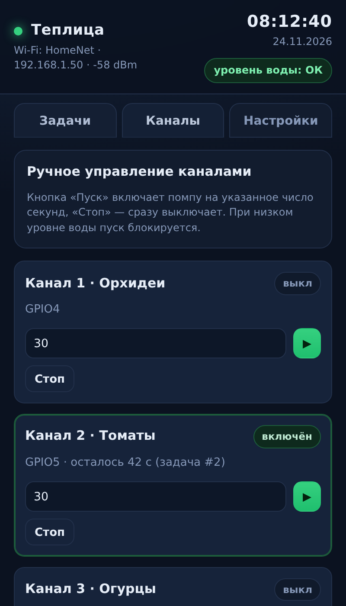
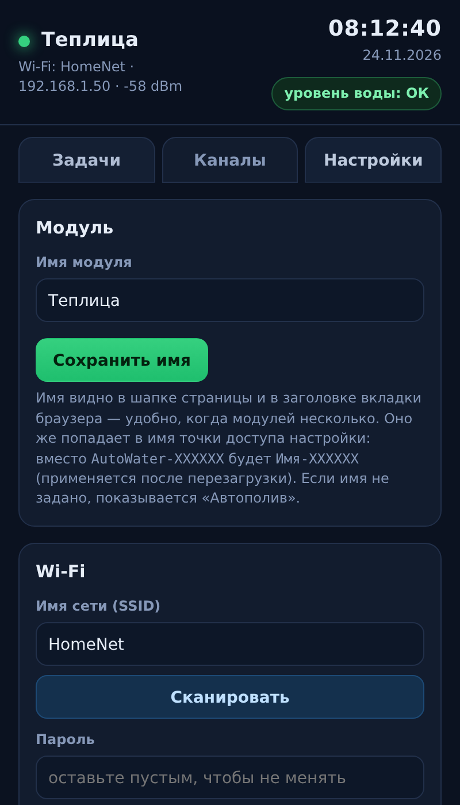
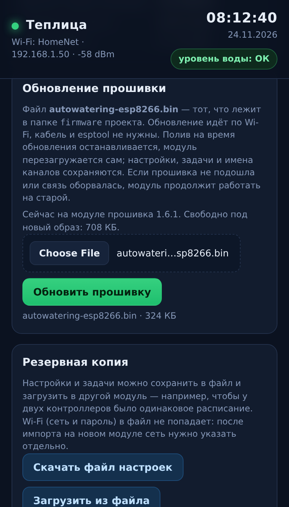
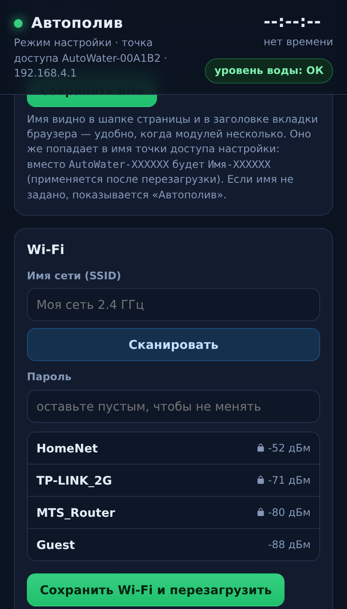
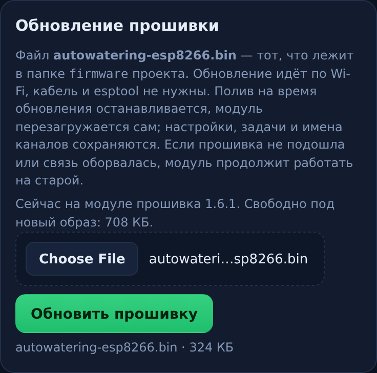

Прошивка для контроллера полива: четыре помпы, датчик низкого уровня воды, расписание по дням и полноценный веб-интерфейс прямо с платы — без приложения, аккаунта и подписки. Обновляется по Wi-Fi, настройки и задачи живут в EEPROM.

Всё, что нужно для полива на балконе, в теплице или на даче — в одной прошивке и без внешних сервисов.
До 8 задач: время старта, длительность в секундах, период от 1 до 60 дней. «Догоняющий» полив наверстает пропущенный запуск, если устройство было выключено.
Кнопки «Пуск на N секунд» и «Стоп» для каждого канала. Канал можно назвать — «Орхидеи», «Томаты», «Газон» — и имя появится в задачах и уведомлениях.
Поплавок или контактный датчик: при низком уровне воды полив аварийно останавливается, а в интерфейсе видно причину остановки.
Нет сохранённой сети — контроллер поднимает точку доступа AutoWater-XXXXXX
с captive portal: сеть выбирается из списка прямо с телефона.
Новая прошивка загружается через браузер: выбрали файл, нажали кнопку — контроллер записал образ во flash и перезагрузился. Кабель не нужен.
Всё хранится в EEPROM с контрольной суммой: настройки, задачи, время последнего и следующего полива. Питание пропало — расписание продолжится.
Настройки и задачи выгружаются в JSON-файл и загружаются в другой модуль — удобно клонировать конфигурацию на второй контроллер.
C++11, Arduino core 2.4.2, без облачных зависимостей. Собирается скриптом
tools/build_firmware.sh без Arduino IDE и PlatformIO.
Настоящий интерфейс контроллера — открывается с телефона по адресу устройства в локальной сети.




.bin и нажать кнопку — модуль сам перезагрузится в новую версию.
Один файл прошивки, один кабель и телефон для настройки сети.
Файл autowatering-esp8266.bin — версия 1.6.1,
315 КБ. Ссылка ведёт на страницу релизов, там же лежат прошлые версии.
ESP8266 подключается по USB. Команда для любого ПК с Python; на Windows проще
NodeMCU-PyFlasher — выбрать файл, адрес 0x00000, скорость 921600.
pip install esptool
esptool --chip esp8266 --port COM7 --baud 921600 \
write_flash --flash_mode dout --flash_freq 40m --flash_size 4MB \
0x00000 autowatering-esp8266.binПосле прошивки контроллер поднимает сеть AutoWater-XXXXXX (со своим паролем
Wi-Fi на телефоне). Откройте 192.168.4.1, нажмите «Сканировать», выберите
домашнюю сеть 2.4 ГГц, введите пароль — устройство перезагрузится и покажет свой IP.
Дальше интерфейс доступен по этому адресу из любой точки домашней сети.
Нужен ESP8266 с 4 МБ flash (NodeMCU v3, Wemos D1 mini, ESP-12F-модули). Платы на 1 МБ прошивкой не поддерживаются.
Начиная с 1.6.0 прошивка обновляется из браузера — кабель нужен только один раз, при первой установке.

Небольшой проект без «магии»: понятная структура, REST API и тесты логики, которые гоняются без железа.
ESP8266WebServer отдаёт одностраничный интерфейс (gzip в flash) и JSON API:
/api/state, /api/config, /api/task,
/api/ota, /api/export.
Структуры фиксированного размера в секторе EEPROM с CRC32 и версией формата: обновление прошивки не сбрасывает настройки.
Логика хранилища, планировщика, помп, импорта и сборки JSON проверяется обычным
make -C tests/host run — 230+ проверок, включая настоящий парсинг JSON.
Кросс-компилятор xtensa-lx106-elf (GCC 4.8.2) и Arduino core 2.4.2 — скрипт
собирает готовый .bin с загрузчиком eboot.
Пины по умолчанию: помпы GPIO4, GPIO5, GPIO12, GPIO14, датчик GPIO13 — меняются в настройках.
Один файл — вся прошивка: загрузчик, интерфейс и код.
0x00000.
Ссылка ведёт на файл в репозитории (firmware/autowatering-esp8266.bin); прошлые
версии и заметки о выпусках — в разделе релизов. Проверить целостность файла:
certutil -hashfile autowatering-esp8266.bin MD5 (Windows) или
md5sum autowatering-esp8266.bin (Linux/macOS) — значение должно совпасть с указанным выше.